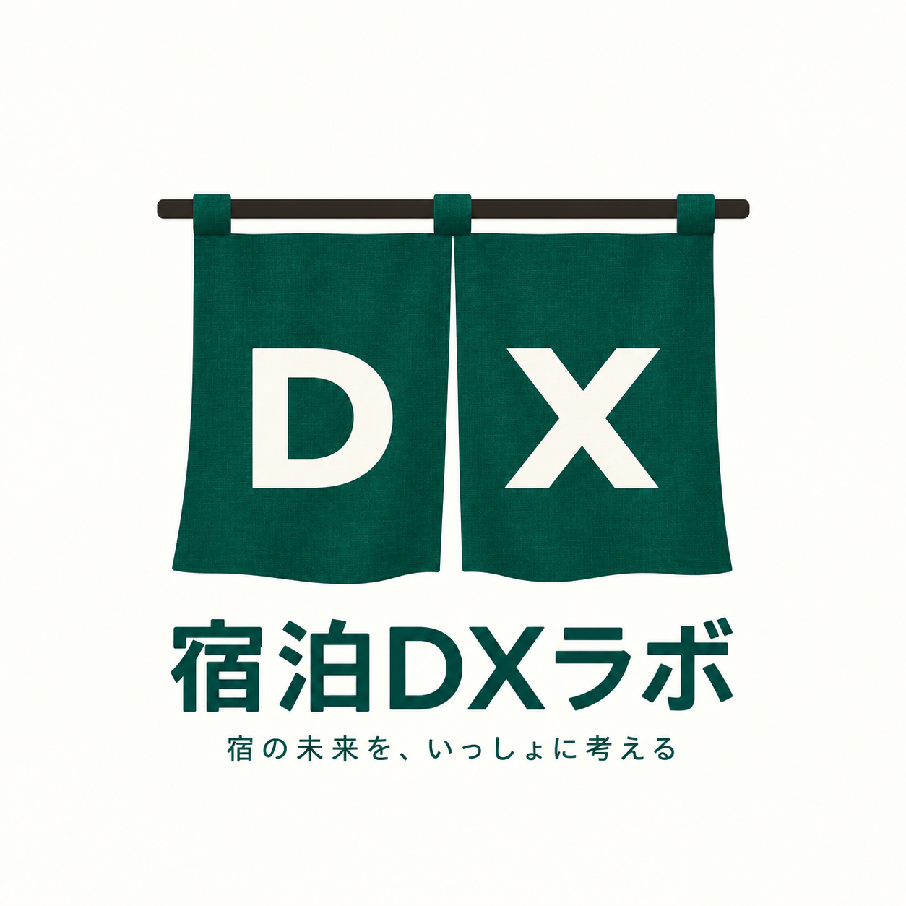

SHUKUHAKU DX LAB
宿泊DXラボは、旅館・ホテルの経営や業務改善に役立つデータ分析やツールを公開する場所です。

TOOLS
LAB 01
施設の現状から、DXで優先したいポイントを整理します。
LAB 02
公的データ分析
外国人宿泊需要や国・地域別構成を分析します。
宿泊需要・人材負荷・人口から、地域のDX必要度を分析します。
需要・稼働率・宿泊事業所数から、地域の需給状況を分析します。
宿泊者数・人口・宿泊業従業者数から、地域の観光依存度を分析します。
LAB 03
観光・インバウンド関連企業の動きから、市場変化の兆候を確認します。
同じ宿泊条件で、地域や施設ごとの料金と取得日ごとの推移を比較します。
JPX日経400銘柄の大量保有報告と株価の動きから、今週・今月に確認したい銘柄を整理します。
LAB 04
地域データと施設情報から、DX・人手不足・市場環境を考えるヒントを提示します。
ABOUT
料金、市場動向、インバウンド、DXなどを、できるだけ分かりやすく見える化し、「今、何が起きているのか」「自施設はどこにいるのか」「次に何を考えるべきか」を判断するための材料を提供します。
答えを決めつけるのではなく、宿泊経営を考えるための新しい視点をつくる。
それが、宿泊DXラボです。